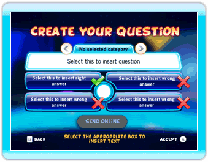

23 |
Creator |
 |
In TV Show King 2 heeft iedere speler een Om gebruik te maken van ‘Creator’ moet je verbonden zijn met Nintendo
 Maak gebruik van de verschillende onderdelen van de interface om je vraag te creëren. Richt met de Wii-afstandsbediening op de vraag of één van de 4 antwoorden en druk op de A-knop om het toetsenbord op het scherm te laten verschijnen. Gebruik het toetsenbord om de vragen en antwoorden in te voeren. Kies het vakje ‘category’ om de categorie van je vraag te selecteren. Tot slot: als je klaar bent met je vraag, richt dan met de Wii-afstandsbediening op het ‘Send online’ (Online verzenden)-pictogram en druk op de
Het downloaden van vragen is heel gemakkelijk: richt met de Wii-afstandsbediening op het ‘Update questions’ (Vraag vernieuwen)-pictogram en druk op de A-knop voor nieuwe vragen. Tevens zie je ook hoeveel ruimte nog beschikbaar is en het aantal nieuwe vragen dat beschikbaar is. Om er zeker van te zijn dat er voor nieuwe vragen voldoende geheugen beschikbaar is op het
Als je een vragenpakket wilt verwijderen uit het Belangrijk: je kunt de verwijderde vraag altijd weer gewoon downloaden! |
 |
 |
 |